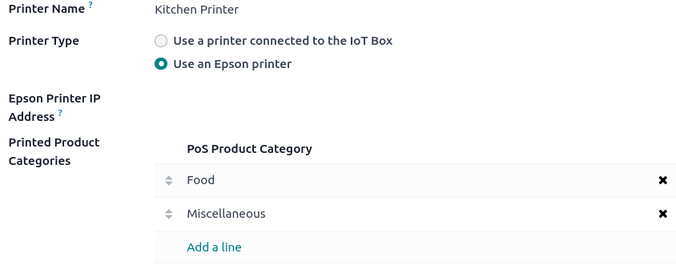

Orders printing¶
Integrating printers in a restaurant or bar’s workflow can enhance communication and collaboration between the front-of-house and back-of-house teams, leading to a more streamlined and efficient service.
Configuration¶
Enable and create printers¶
To enable sending orders to a kitchen or bar printer, go to , scroll down to the Restaurant & Bar section, and enable Kitchen Printers. Type in a name for the printer in the Printers field and click Create and edit… to open a setup form.
To get a list of all the printers already created or to modify an already created printer, click –> Printers and select the desired printer to open the setup form.

Setup form¶
From the setup form, select the Printer Type according to your installation:
If your printer is connected to an IoT box, select Use a printer connected to the IoT Box and select the device in the IoT Device field.
If you use an Epson printer that does not need an IoT box, select Use an Epson printer and enter the printer’s IP address in the Epson Printer IP Address field.
Set your printer to print specific products based on their POS category. To do so, click Add a line in the Printed Product Categories field. If you leave this field empty, all products are sent to the printer regardless of their POS category.
Print orders¶
From an open session, start taking an order and click Order to send it to the bar or the kitchen.

Note
When products can be printed, they appear in green in the cart, and the order button turns green.